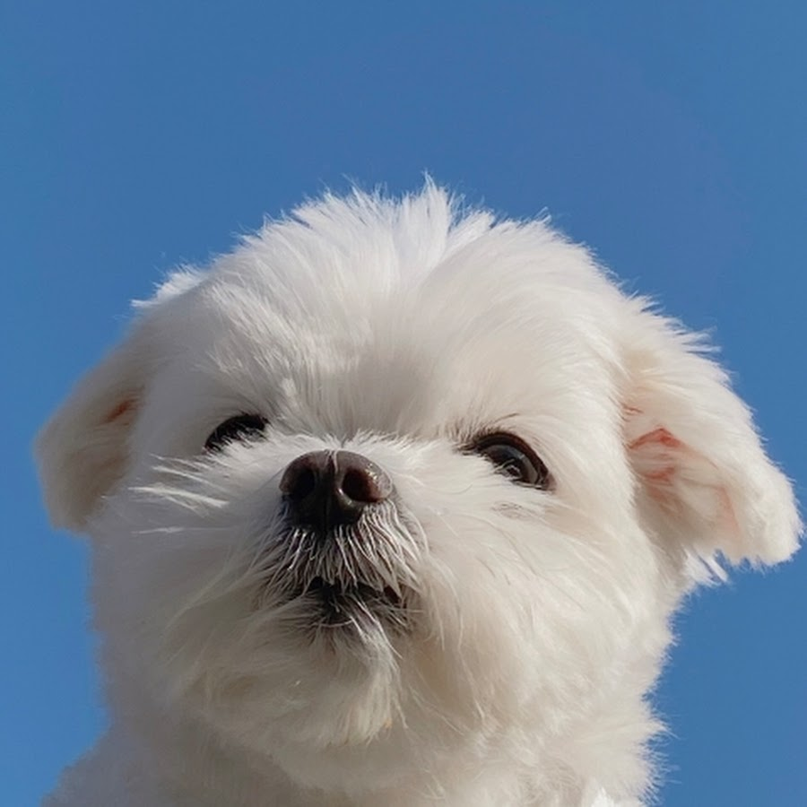

홈
관심분야
자유게시판
개발자소개
달력
애니메이션
회원가입
한국에서 인기가 많은 강아지들
말티즈

말티즈 혹은 몰티즈는 개 품종 중 하나이다. '몰티즈'란 이름은 이 개가 지중해의 몰타섬이 원산지여서 붙여졌다는게 정설이지만, 지중해의 멜리타 지역에서 유래되었다고 주장하는 학자들도 있다. 몸무게는 2~3kg이 평균이지만 큰 종의 경우 5kg까지 된다. 온몸이 순백색의 길고 부드러운 명주실 같은 털로 덮인 매우 아름다운 개로, 새까만 코끝과 어두운 색의 눈이 순백색의 털이 돋보인다. 지중해의 몰타섬이 원산이라고 하여 이 이름이 붙여졌으나, 사실의 기록이나 전승은 전혀 없고 기원도 뚜렷하지 않다. 몰티즈의 원산지가 이탈리아라는 의견도 있다. 1800년 무렵에는 유럽 전역과 미국에 널리 알려졌으며, 아름다운 모습과 온화하고 높은 지능을 지녀 애완용으로 널리 사육되었다. 평균 수명은 15년 정도로 알려져 있다.
고대의 이 품종은 여러 세기동안 여러 가지 이름의 종류로 알려져 왔다. 라틴어로 "카니스 멜리타우스"라고 원래 불려 왔으며, 영어로는 "Ancient dog of malta", "Roman ladies' dog", "Maltese lion dog" 로도 잘 알려져 있다. 흔한 최초의 이름인 코키는 알려지지 않았으나, 1960년대 중반 미국 동부해안지역에서 사용한 것으로 여겨진다. 이 견종은 비슷한 견종인 비숑으로 잘못 불려 왔으나 같은 종은 아니다. 아메리칸 커널 클럽이 공식적으로 19세기에 이 종에 "몰티즈"라는 이름을 정착시키기 시작했다.
몰티즈는 스위스 호수 근처에서 발견된 스피츠 종류의 개에서 유래되었고, 다양한 시도의 사육으로 작은 크기에 이르게 되었다. 티베탄 테리어와 연관하여 아시아에서 시작된 종이라는 가설도 있다. 그러나 정확한 근원은 알려지지 않았다. 이 개는 유목민들을 통해 중동을 거쳐 유럽으로 넘어 갔을 것으로 보인다. 일부는 이 초기 몰티즈가 이 품종의 특징을 얻기 전까지 쥐나 토끼같은 설치류들을 관리하는 데에 이용되었다고 믿는다.
포메라니안
포메라니안은 중앙유럽에 있는 포메라니아 지역에서 유래된 스피츠 종류의 반려견이다. 작고 귀여운 외모와 복슬복슬한 털이 특징이며 털빠짐이 있다. 작은 크기 때문에 소형견로 분류되는데, 포메라니안은 대형 스피츠종 개인 독일 스피츠에서 유래되었다. 이 때문에 국제애견협회에서도 포메라니안을 독일 스피츠의 일종으로 구분했고, 많은 나라에서 츠베르크슈피츠로 알려져 있다. 또는 폼, 폼폼이라는 이름으로도 불린다.
이 품종은 17세기 이후 많은 왕실 일족들에게 인기를 얻었다. 영국의 빅토리아 여왕은 특히 작은 포메라니안을 소유했었고, 이로 인해 더 작은 포메라니안이 인기를 얻었다. 빅토리아 여왕의 생애 동안 포메라니안의 크기는 50%까지 줄었다. 대체로 포메라니안은 튼튼하고 건강한 개이다. 대부분의 흔한 건강 문제는 슬개골 탈구와 기관허탈이다. 또한 "흑피병"으로 불리는 피부병과 탈모증도 흔한 질병 중 하나이다. 흑피병은 개의 피부가 검은색으로 변하고 털이 거의 다 없어지는 유전 질환이다. 이 품종은 현재 미국에서 가장 인기 있는 애완견 15종 중 첫번째로, 귀여운 외모로 세계적으로도 소형견으로 인기를 얻고 있다.
오늘날 포메라니안의 조상은 북극 지역에서 많은 일을 하던 개였다. 이 조상 개는 독일어로 "뾰족한 얼굴"이라는 뜻에서 울프스피츠 또는 그냥 스피츠 종이라고 알려졌는데, 16세기 카운트 에버하르트 주 자인이 개의 코와 주둥이 부분이 뾰족하다는 점을 참고해 이 말을 사용했었다. 이러한 점에서 포메라니안은 독일 스피츠의 후손으로 간주되고 있다.
푸들
푸들은 개의 품종 중 하나이며, 프랑스의 국견이다. 과거의 푸들은 사냥개였다. 원산지는 독일이고, 프랑스 귀족 여성들에 의해 인기를 얻어 널리 퍼져나갔으며, 털이 길고 양털 모양으로 자란다. 털이 자주 엉키기 때문에 하루에 1회 이상 빗질은 필수이며, 털 빠짐이 적다. 털이 빨리 자라기 때문에 미용도 자주 해주어야 한다. 밝고 활발한 성격이 특징이며 굉장히 똑똑하다. 활동량이 많아서 산책을 자주 해주어야 하며, 주인을 굉장히 따라서 분리불안에 걸리기 쉽다. 푸들은 세계 천재견 순위로 2위를 차지 하였다. 주인의 감정을 굉장히 많이 공유해서, 노인들에게는 남은 인생을 함께하자는 의미의 개로 많은 사랑을 받는다. 또한 푸들의 죽음에 바치는 비가라는 소설이 있을 정도로 푸들은 전세계적으로 사람들에게 아주 많은 사랑을 받고 있다.
푸들은 매우 지능적이고 활기차고 사교적인 품종으로 알려져 있다. 육체적 활동과 지적 활동이 모두 필요하다. 전형적인 푸들은 처음 만날 때 낯선 사람에게 약간의 냉정함을 유지하지만, 잠시 후 새로운 사람이 신뢰할 만하고 해를 끼치지 않는다는 것을 알게 되면 천천히 따뜻하고 개성있는 기질을 낸다. 사람을 물으려하고, 다른 개에게 공격성을 보이는 악의적인 행동은 푸들의 심각한 문제로 간주된다. 푸들은 공격적이지 않기 때문에 경호견이 되기에는 적합하지 않지만, 잘 돌본다면 푸들은 충성심으로 보답할 것이다. 이 푸들은 일반적으로 조용하고 차분하지만 위험이 다가온다면, 가족들은 보호한다.
푸들은 일반적으로 훈련에 탁월한 능력이 있는 개이다. 푸들은 도그 다이빙, 도그 서핑, 추적, 플라잉 디스크와 같이 민첩성을 요구하는 많은 개 관련 스포츠 종목을 잘하는 것으로 알려져 있다. 플라이 볼, 그들은 주인이나 가족과 함께 하이킹과 캠핑을 즐길 수 있다. 푸들은 수세기 동안 물을 좋아했기 때문에 수영과 관련된 여행을 갈 수도 있다.